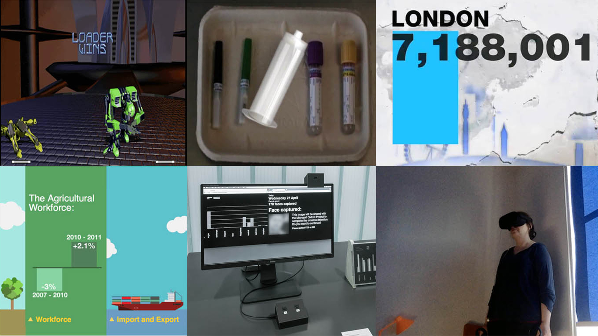
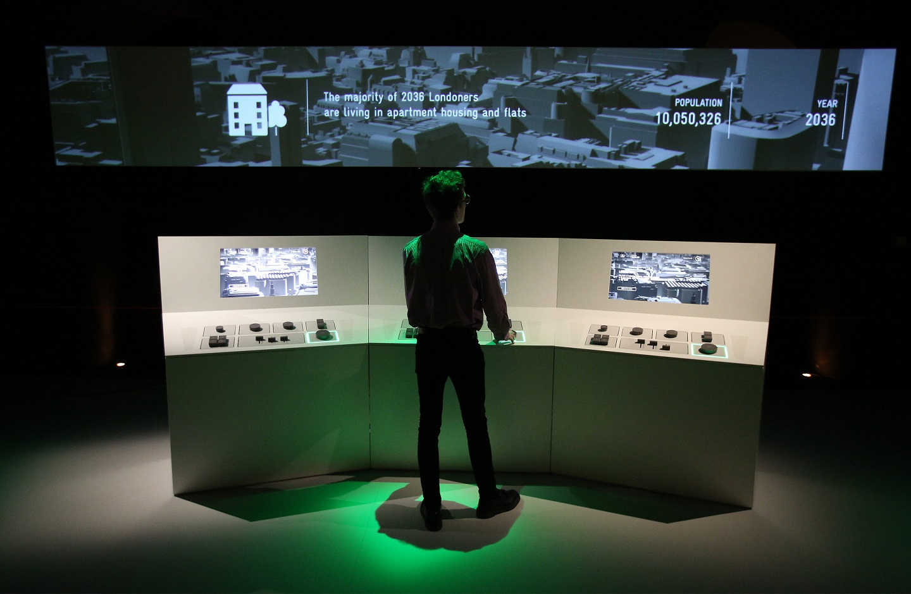
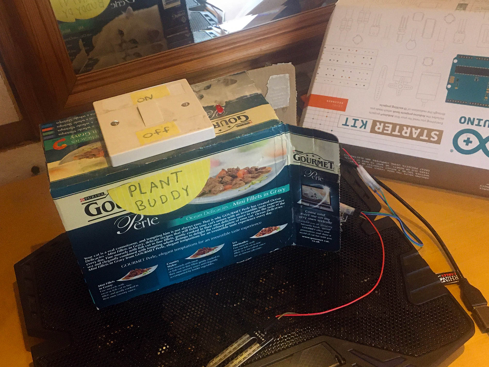
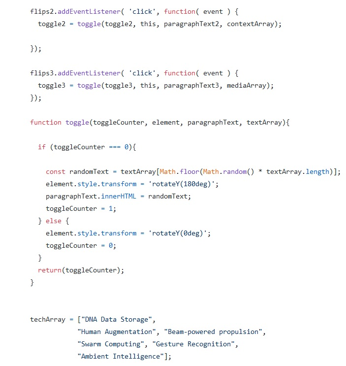
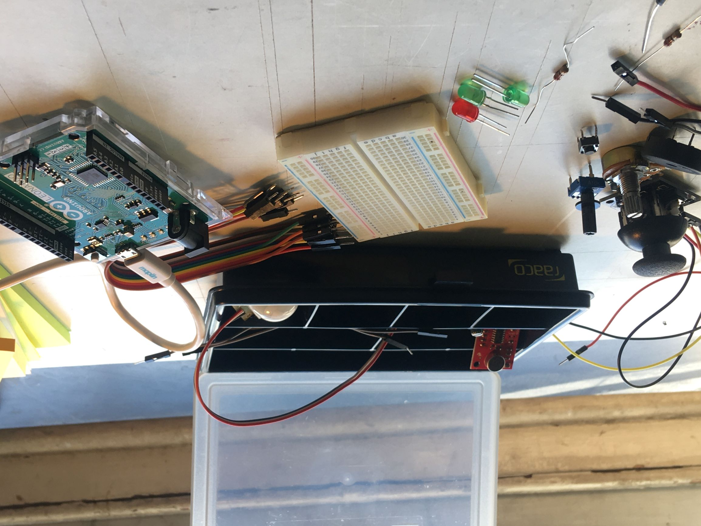
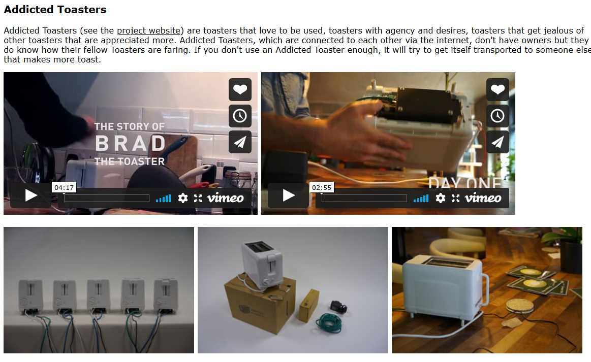
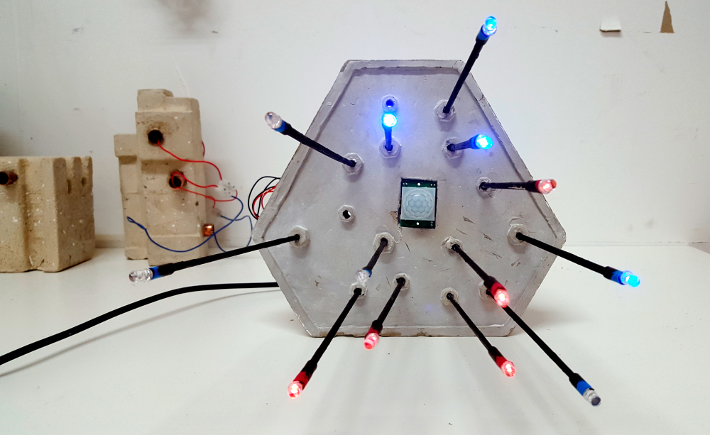

Unit 3
phsycial and visual computing
Hi, I’m Indira and I’m one of the people working with you in Unit 3. In this unit you will be exploring physical computing and computer programming with a visual output. In physical computing you program physical objects that interact with the physical or digital world, this will be connected with digital inputs and outputs so that there is a play between the digital and physical worlds. Today I'll be introducing the unit, then we will be looking at JavaScript

My background is in design, programming and animation, particularly 3D. My interests are in VR/XR, new technologies, data visualizations and physical computing. I worked for a number of years as a visual designer at Al Jazeera English on news graphics, during that time I started using JavaScript to create data visualizations, which led me to working as a creative developer. For the last two years I have been working as a design researcher on a project called gameChange, a VR therapy for people with psychosis to help them feel more confident in everyday situations. My role was to work with people with lived experience of psychosis to co-design the application. This has lead to an interest in inclusive design and accessibility.

I got started with physical computing in 2015 when I started working as a creative developer. My first project in a new job was working on a piece for an exhibition called Big Bang Data, about how data effects our lives. Our team lead decided our piece would let people think about data models, they would be the mayor of London and from a series of decisions they made, they would be told how well they did. Instead of this being completely digital the team lead decided it should have a physical interface people interacted with, with the results shown digitally.

After the project I bought the Arduino starter kit and during a week off work, with a friend went through the book. At the end of the week we created this plant buddy, using a sensor that could tell when the earth was dry and the plant needed feeding. I really like the way you can use different components and materials to build something. I’m interested in mixing technologies and with physical computing I like to mix physical and digital.
Aims
coding and creating physical computing projects
using data and user inputs
setting up coding environments
Understanding user needs
Making
Transfer skills
The aim of this unit is to get you comfortable coding and creating physical computing projects, using data and user inputs to create interactions, setting up the coding environments you need for your projects as well as looking how people might interact with your project, understand what making is, its history and being able to transfer these skills to different physical computing technologies. Through this unit we will mainly be exploring play as means to do this. No one can know everything; I hope to give you the information you need so you can understand and explore this area, so when you get stuck, you’ll know where to look, when something goes wrong you can work out how to solve it, and when you approach something you haven’t done before you feel confident that you will be able to work it out.


This unit will be using Arduino and JavaScript. There are other systems to create physical computing projects such as Raspberry Pi or the BBC micro:bit but this unit will concentrate on Arduino as it allows you to explore many aspects of physical computing.
This unit will be assessed on your piece of physical computing, and the theme of the unit is play. It needs to demonstrate your technical ability, critical knowledge and experiential issues of the medium to create a project that interacts with the environment and/or a user. There will be more information about the assessment soon.
Physical Computing
Physical computing brings together hardware and software to create a system that interacts with the world around it, it responds to it. This can be done with sensors such as light, temperature or sound, as well as from people interacting with it via components like buttons or sliders. It can also connect to digital computer systems
It can be playful, informative, insightful or every day. They can help people explore ideas around computing, society and play. It cuts across many disciplines such as art, design, robotics, engineering and computer science.

Interactive toaster, internet of needy things (speculative design), created by Usman Haque

I saw this piece by Nye Thompson at the Arduino London meetup, and she talked about the Internet of needy things, the idea that once inanimate objects are now needy as they are connected to use via sensors, I foundthis interesting.
I saw the wall climbing robot on the internet and liked it as it shows the range of things you can prototype with an Arduino. Some of the components are Some of the major components are: Arduino ATMega, DC Motors, High Power DC Fan, LI- PO Batteries
The Good Night Lamp was designed by Alexandra Deschamps-Sonsino, who also started IoT London. Two lamps are connected across a distance, so by switching it on, it also switches on at the other location, giving two people a connection.
There is a global Arduino day, where a lot of maker spaces and makers will put on making events to show work, or hack together.
This was a project created where I used to work. It is taking live data from electricity use in the UK, so when there is low use the light is green, when use is going up the light turns orange, then when it gets to the point where the coal powered stations would start to be used the light would be red. The idea is that by giving people real time information they can make informed choices about what they do, they know the impact it is having.
Play
In this unit you will be creating a physical computing project based around play,
What is play? Play is like action done for its own sake. It’s in a way the very paradigm of freedom. Because action done for its own sake is what freedom really consists of. Play and freedom are ultimately the same thing.
Managerial Feudalism to the Revolt of the Caring Classes presented by David Graeber
In the book The Infinite playground, Bernard De Koven talks about fun, when we were children, we had fun like children, but it's not something we associate with adults so as adults we sort of stop having fun, his idea is that as adults we should also occupy fun, make it ours, think about what we have done that we consider fun and then think about what makes them fun.
He also talks about occupying play, that we really like to play, whether its toys, games or imagination we like to play, we don’t need physical things to play, but they help he said
Play means presence, but not just presence. Responsiveness, but not just responsiveness. Presence and responsiveness, lightness and attentiveness, improvisation and creativity, a willingness to let go and become part of something new.
Bernard De Koven - The Infinite Playground: A players guide to imagination
This unit will explore play in parallel with the technical skills needed to create a psychical computing project.
Social theorist Clark C. Abt makes a powerful suggestion. In his claim that a game is a particular way of looking at something, at anything, we find inspiration for our own approach to game design. How can we use games as a way to understand aesthetics, communication, culture, and other areas of our world that seem so intertwined with games
Rules of play - game design fundamentals by Katie Salen Tekinbaş and Eric Zimmerman
In Rules of play, game design fundamentals the authors write:
Throughout the unit we will be playing and designing play looking at rules of play, the flow, imagination, meaning in play, systems, interactivity and the people who play, how they play.
Play is seen to have some distinct attributes, it is normally voluntary and should be pleasurable for its own sake, it involves some level of engagement and has a make-believe quality.
It is usually voluntary
It is pleasurable for its own sake
it involves some level of active engagement
A make-believe quality
play is generally defined as having the following four attributes: 1) it is usually voluntary; 2) it is intrinsically motivating, that is, it is pleasurable for its own sake and is not dependent on external rewards; 3) it involves some level of active, often physical, engagement; and 4) it is distinct from other behavior by having a make-believe quality